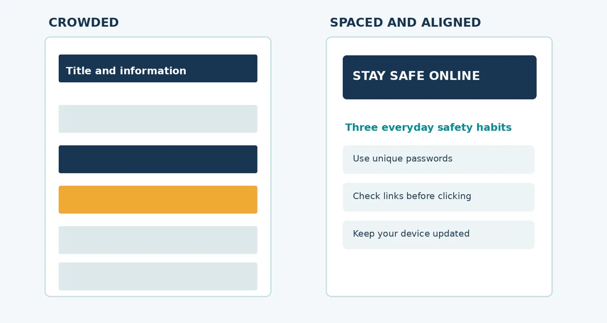
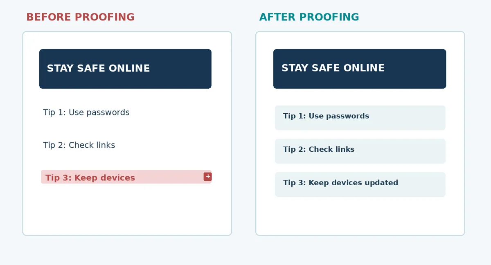
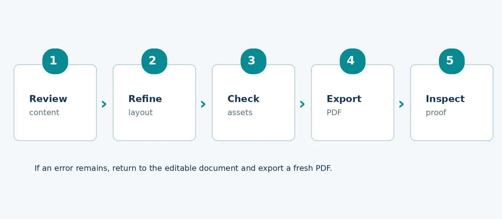
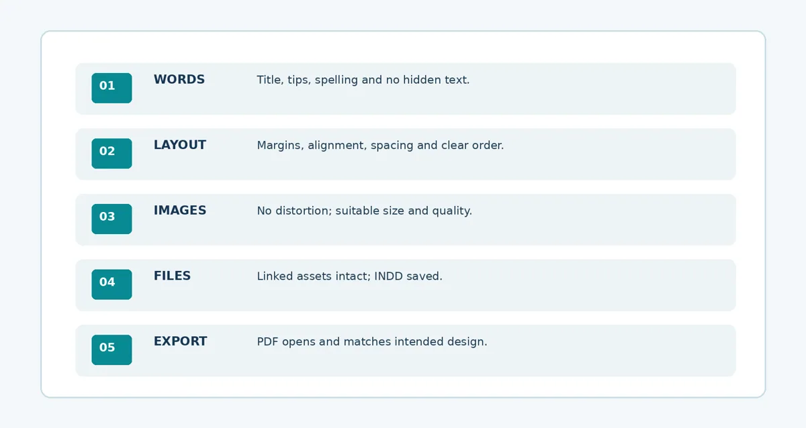

Creating and Finalising a Simple Publication
Refine a hand-out, correct problems and check the final layout.
Lecture notes
In Lecture 7 you assembled a first draft with an A4 page, margins, editable text frames and a placed image. This lecture is about turning that first draft into a publication that another person can read with confidence. You do not need advanced page-design tools: careful editing, consistent formatting, a few quality checks and a correct export are enough to make a significant difference.
Learning outcomes
- Refine the content and appearance of a simple one-page publication.
- Apply text hierarchy, alignment, white space and consistent formatting.
- Recognise and correct overset text, distorted pictures and missing links.
- Review an exported PDF proof and correct errors in the editable source file.
- Submit an organised source document and a final PDF suitable for sharing.
1. Revising the message before the design
A publication succeeds when a reader can identify the main message and understand the supporting information. Begin with content accuracy: check the title, the purpose, the three safety tips and the organisation name. Short sentences are easier to scan than long blocks of text. For the Tumaini hand-out, keep the advice focused on strong passwords, checking links and protecting devices.
Editing is not the same as decorating. Replacing vague wording with a specific instruction usually improves a hand-out more than adding another shape or changing the background colour. Read the text as a new computer user would. Check that the information is understandable without the lecturer being present.
2. Establishing clear typographic hierarchy
Typographic hierarchy is the organised difference between titles, subtitles, headings and body text. The title should draw attention first; the short introduction should help the reader understand the topic; the practical tips should be easy to locate and read. Hierarchy can be created through font size, weight, spacing and position, not by using many unrelated fonts.
Figure 8.1. A clear hierarchy guides the reader more effectively than text of uniform importance.
3. Alignment and white space
Alignment means placing related elements along consistent visual lines, such as the same left margin. White space is the deliberate open area between and around content. Both help readers distinguish one group of information from another. Leave enough space around the title, image and three tips. A blank area is not wasted space if it improves reading.
Use a small set of consistent colours. For example, keep headings navy, labels teal and a single accent amber. Avoid colouring each tip differently without a reason. Use visual contrast that makes words legible against their background.

Figure 8.2. Crowded elements are harder to scan than aligned groups separated by white space.
4. Text fitting, image proportions and linked assets
Overset text occurs when words exceed the visible capacity of a text frame. InDesign may indicate it with a red plus symbol. Hidden text is still stored in the document but may not appear on the exported page. Fix it by increasing frame height, adjusting spacing or shortening the wording; do not simply make text too small to read.
An image can also be distorted when its width and height are changed independently. Keep its proportions intact and crop within the frame if needed. InDesign often links to the source image stored outside the .indd document. When a linked image is moved or renamed, the Links panel may show a missing or modified link. Restore the correct source file before exporting.

Figure 8.3. A visible red plus is a warning to resolve the missing body text before export.
5. From a draft to a final proof
Proofing means reviewing a nearly complete publication to identify errors before it is shared or printed. First inspect the content in InDesign, then export a fresh PDF and inspect the PDF as a reader would. The document may appear acceptable in the editing window but still contain a cropping, font or placement problem in the exported proof.

Figure 8.4. The beginner workflow: review, refine, check, export and inspect.
When changes are required, reopen the editable .indd file rather than assuming the PDF is the main working document. Save the revised source, export a new PDF and check again. A successful revision process is repeated until the final proof has no known critical errors.
6. A simple quality-control checklist
- Content: accurate title, full tips, correct spelling and understandable instructions.
- Typography: title is dominant, body text is readable, and formatting is consistent.
- Layout: margins, left edges, spacing and reading order are clear.
- Graphics: the picture retains its proportions and any linked artwork appears correctly.
- Proof: no hidden text, missing links or unexpected objects; PDF opens as expected.

Figure 8.5. The five inspection areas before final submission.
7. Final files and good file management
Save the editable file as Tumaini_Handout_Final.indd. Export the one-page hand-out as Tumaini_Handout_Final.pdf. Keep the source image and vector icon in the same organised project folder, and avoid renaming linked assets after they have been placed. The PDF can be shared for reading, while the INDD is retained for editing. These two files serve different purposes.
A class PDF proof demonstrates readable composition. A commercial print-ready PDF may require extra production settings, such as printer-approved bleed and colour profiles; those requirements should not be assumed for this one-page classroom assignment.
8. Worked example: improving the Tumaini hand-out
The first draft already communicates the three safety habits, but it can be improved through a more relevant central illustration, a concise introductory sentence, consistent tip blocks and clearer spacing. The model below is an example of the result, not an InDesign document and not a design that must be copied exactly.
Figure 8.6. Example of a final A4 educational hand-out, created as a visual model.
Key ideas to remember
A final publication is not merely a document that has been exported. It is a document whose meaning, layout, typography, images, links and final proof have been checked. Make changes in the editable source file, keep the files organised and export a new PDF after each important correction.
Review questions
- What is the difference between editing content and improving visual layout?
- Describe typographic hierarchy using the Tumaini hand-out.
- Give two ways to correct overset text without reducing readability.
- Why should an image be resized proportionally?
- What is a missing image link, and how might you resolve it?
- Why should you inspect a PDF proof after exporting it?
- What is the role of the INDD source file compared with the final PDF?
- State three checks you would perform before submitting the educational hand-out.
Simple practical activity
Proof and finalise the hand-out
Reopen your A4 hand-out. Improve the heading and spacing, check for hidden text and distorted images, and export a corrected PDF. Record three checks performed.
Read the full guided practical instructions
Task: complete the one-page A4 “Stay Safe Online” hand-out started in Lecture 7. Use your own editable draft where available. The image, lightbulb icon and original text are supplied again in the resource folder. Your goal is a readable, accurate publication, not a complicated design.
Part A — Inspect your first draft
Read the title, introduction and three tips. Identify two areas that need improvement. Check the text frames and linked graphics before changing the appearance.
| Item to inspect | Your observation / planned correction |
|---|---|
| Title and main message | |
| Text visibility and spelling | |
| Image and links | |
| Margins and spacing |
Part B — Make the improvements in InDesign
- Open your Lecture 7 INDD file. If it is unavailable, create a new one-page A4 portrait document with 15 mm classroom margins.
- Keep the title prominent. Use a single readable body-text style for the three tips and align related elements.
- Check all text frames. Resolve any overset text without shrinking the body text excessively.
- Place the prepared image or supplied illustration, preserving its original proportions.
- Check the Links panel and confirm that all required images appear without warnings.
- Save the revised project as Tumaini_Handout_Final.indd.
Part C — Export and inspect the final PDF
- Export the document as Tumaini_Handout_Final.pdf using a suitable PDF setting for class sharing.
- Open the PDF outside InDesign; check every line from title to footer.
- Correct any problem in the INDD source and export the PDF again.
- Retain both files and the source assets in an organised folder.
Your final quality-control record
| Check | Pass / needs correction | What you observed |
|---|---|---|
| Complete readable text | ||
| Clear title and hierarchy | ||
| Aligned blocks and suitable space | ||
| No image distortion or missing links | ||
| PDF matches final source |
Part D — Short reflection
1. Which two improvements made the hand-out easier to read?
________________________________________________________________________________
________________________________________________________________________________
2. What did you find when you checked your PDF proof?
________________________________________________________________________________
________________________________________________________________________________
Submission: editable .indd file, final .pdf, source assets and this completed record. If InDesign is unavailable, improve an annotated A4 paper layout and write the correction plan; complete the digital submission during the next available practical session.
Review questions
Try explaining each answer in your own words before using the quiz.
- How can a designer check an exported PDF?
- Why must an error be corrected in the source document?
- Name three things in a publication proofing checklist.